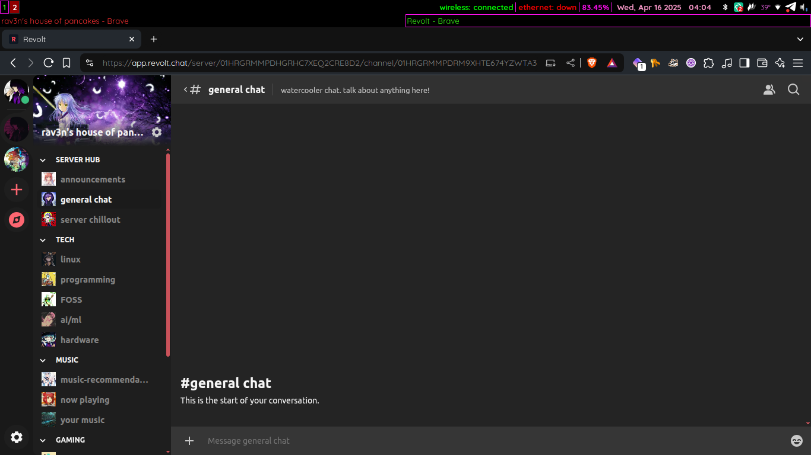

now | blog | wiki | recipes | bookmarks | contact | about | donate
* * * back home * * *
a lil corner of the internet to hang out
A lot of people make their communities in a Discord server, and while I have certainly done that (and am still in a few Discord servers), I try to do as much as I can using free software. Everyone has a Discord these days, so a free software alternative to Discord has been sorely needed.
I'm happy to report that there is now a very cool free software app called Revolt, and I have been building up a few 'servers' on there for friends and internet community members to hang out in.
Revolt is very similar to Discord. It has a very familiar layout for anyone who has ever used Discord. Your server list is off to the side, you can see all the channels for the server you're currently in (including voice and text channels) and select from them. It's still in development, but it is already quite useable and has been a lot of fun to replicate some Discord servers on.
rav3n's house of pancakes (or RHOP as we call it sometimes) has been a Discord server of mine for a long time. Some friends and family would chat in there, hang out, watch films, and play games together. I've been taking all the text and voice channels, all of the iconography, channel descriptions and everything and moving it over to Revolt. It has been a lot of fun so far, and I'm currently testing it out weekly with a few friends for online gaming sessions.
If you want to join rav3n's house of pancakes, feel free to use the invite link below to get into our Revolt server and get all setup.
Join rav3n's house of pancakes revolt server!